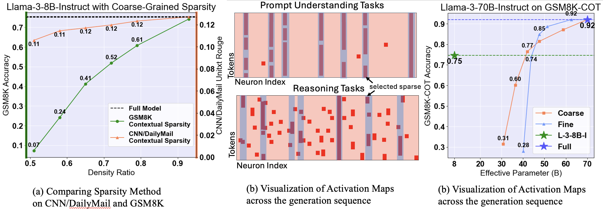
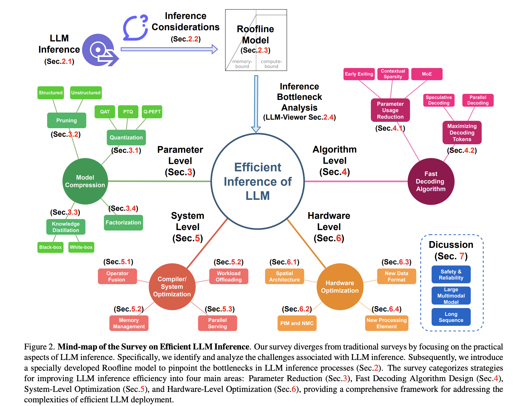
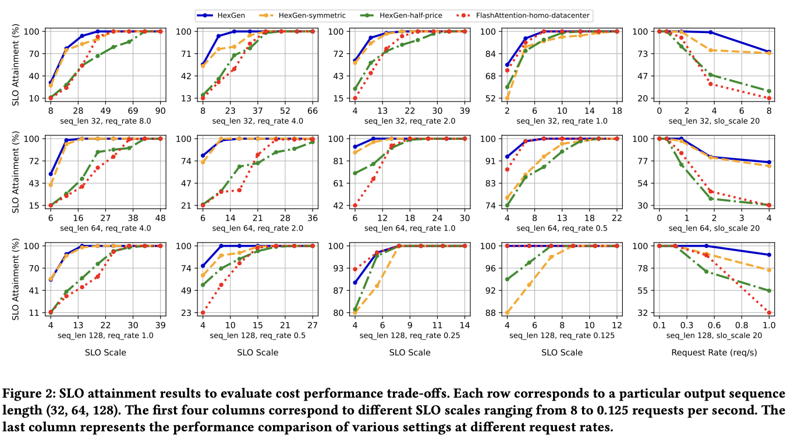
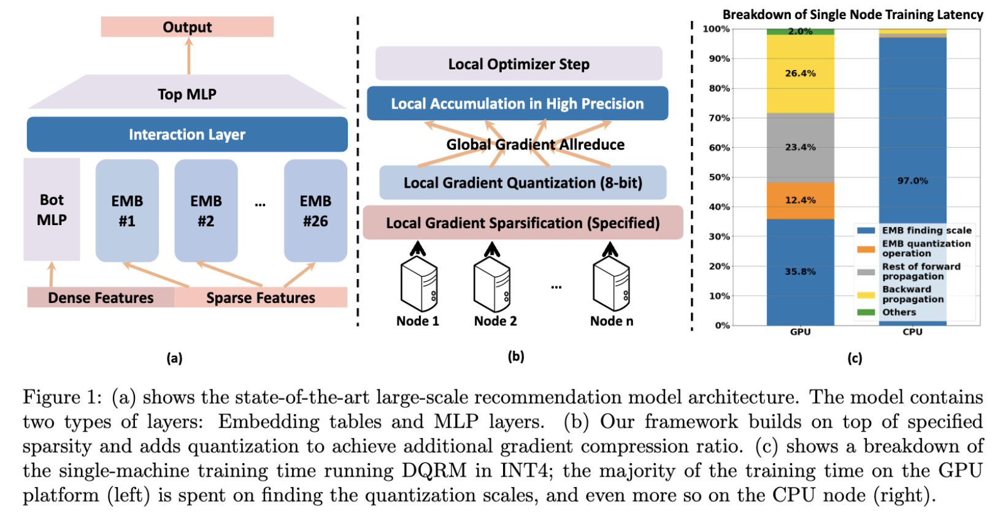
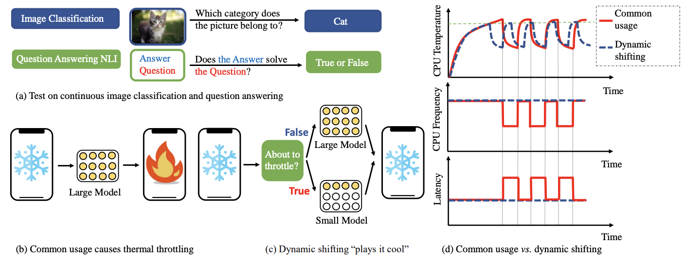
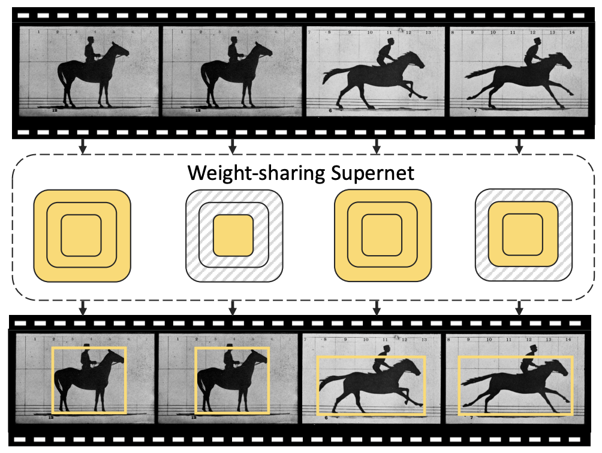

|
Yang Zhou (周旸)
Yang Zhou here. I am a PhD student at Carnegie Mellon University, fortunately working with Prof. Beidi Chen. Previously, I was fortunate to work with Prof. Diana Marculescu on EdgeAI and with Prof. Kurt Keutzer on model quantization. I obtained my bachelor degree at The University of Texas at Austin, studying Electrical and Computer Engineering.
My current research focus lies in understanding and improving Large Language Models' reasoning and planning ability with special attention for inference scaling efficiency. I am eager to explore and welcome meaningful collaborations of any kind. If you are aligned with my research ideas and would like to discuss, please don't hesitate to reach out.
Email /
CV /
Scholar /
X/Twitter /
Github
|
|
Latest News
September 2024
One paper (Sirius) get accepted at NeurIPS
February 2024
One survey paper (LLM Unveiled) is now on ArXiv
August 2023
Started Graduate school at CMU
May 2023
Graduated from UT Austin
Research
Most of them related to model compression with the focus of efficiency. Some are Highlighted. (Updated in Oct. 2024)
|
|

|
Sirius: Contextual Sparsity with Correction for Efficient LLM
Yang Zhou,
Zhuoming Chen,
Zhaozhuo Xu,
Victoria Lin,
Beidi Chen
NeurIPS, 2024
project page
/
arXiv
/
code
We reveal that contextual sparsity struggles at complex reasoning tasks. We propose a efficient correction method to recover the accuracy degradation of contextual sparsity models while maintaining their efficiency.
|
|

|
LLM Inference Unveiled: Survey and Roofline Model Insights
Zhihang Yuan*,
Yuzhang Shang*,
Yang Zhou*
Zhen Dong,
Zhe Zhou,
Chenhao Xue,
Bingzhe Wu,
Zhikai Li,
Qingyi Gu,
Yong Jae Lee,
Yan Yan,
Beidi Chen,
Guangyu Sun,
Kurt Keutzer
Manuscript, 2024
LLM-Viewer
/
arXiv
We breakdown the LLM inference memory bottlenecks and present algorithm/hardware/system considerations in improving the serving/inference of LLMs. Besides presenting a comprehensive summary of previous works in LLM inference optimation from algorithm, system, and hardware perspectives, we also introduce a roofline modeling tool called LLM-Viewer. LLM-Viewer helps LLM practitioners to visualize their workflow taylored to their specific LLM model and hardware setup.
|
|

|
HexGen: Generative Inference of Large-Scale Foundation Model over Heterogeneous Decentralized Environment
Youhe Jiang,
Ran Yan,
Xiaozhe Yao,
Yang Zhou,
Beidi Chen,
Binhang Yuan
ICML 2024, 2023
arXiv link
This paper focuses on deploying such services in a heterogeneous and decentralized setting to mitigate the substantial inference costs typically associated with centralized data centers. Towards this end, we propose HexGen, a flexible distributed inference engine that uniquely supports the asymmetric partition of generative inference computations over both tensor model parallelism and pipeline parallelism and allows for effective deployment across diverse GPUs interconnected by a fully heterogeneous network.
|
|

|
DQRM: Deep Quantized Recommendation Model
Yang Zhou,
Zhen Dong,
Ellick Chan,
Dhiraj Kalamkar,
Diana Marculescu,
Kurt Keutzer
Manuscript, 2023
arXiv
/
Code
We propose a variant of DLRM that is efficient to be trained and do inference using quantization. We first show that INT4 QAT is able to give on-par/exceeds performance of FP32 DLRM. We then build a system that train the 4-bit quantized model with 1% sparse gradient.
|
|

|
Play It Cool: Dynamic Shifting Prevents Thermal Throttling
Yang Zhou,
Jeff Liang,
Ting-wu Chin,
Diana Marculescu
DyNN @ ICML (Oral), 2022
arXiv
We notice that deploying powerful neural networks on the edge devices tends to lead to thermal emergency which force OS to throttle the frequency of CPU. We propose a dynamic shifting method to prevent thermal throttling by shifting between the weak and strong models of the same dynamic network.
|
|

|
ANT: Adapt Network Across Time for Efficient Video Processing
Feng Liang,
Ting-Wu Chin,
Yang Zhou,
Diana Marculescu
CVPRW ECV, 2022
arXiv
we propose the ANT framework to harness these redundancies for reducing the computational cost of video processing. The proposed ANT adapts a purpose-fit network by inspecting the semantic differences between frames.
|
Selected Honors
- Carnegie Institute of Technology Dean's Fellowship, Awarded 2023-2024
- College Scholar 2023, Top 10%, University of Texas at Austin
- Distinguished College Scholar, 2022 Top 4%, University of Texas at Austin
- Distinguished College Scholar, 2021 Top 4%, University of Texas at Austin
- Engineering Honor Student, Top 10%, Oct. 2020 to May 2023
Services
Reviewer of ECCV 2023, MLsys 2024
|
{kind=link}